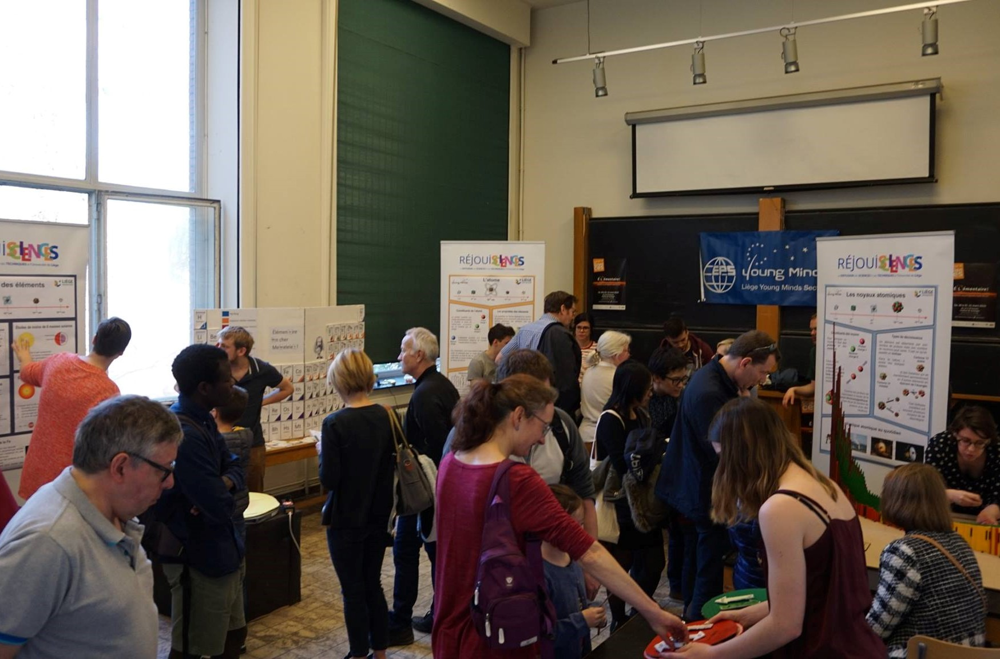

Le projet Young Minds et sa section liégeoise
Le projet Young Minds est une
initiative de laSociété Européenne de Physique
dont le but est de promouvoir les Sciences Physiques
auprès des plus jeunes générations, de recruter des futurs physiciens mais
aussi de connecter entre eux les jeunes
chercheurs actuels.
Concrètement, la Société Européenne de Physique, aidée par ses filières nationales
(dont la Société Belge de Physique),
permet la création de sections Youngs Minds
locales rassemblant des jeunes chercheurs et étudiants dans tous
les domaines de la Physique afin de développer des
activités scientifiques, de
networking mais aussi de
vulgarisation à destination d'un public
plus large.
A l'heure actuelle, des sections Young Minds existent ainsi dans plus de 30 pays,
à travers l'Europe et dans tous le pourtour méditérannéen. En Belgique, trois sections
sont présentes, dont notre section liégeoise créée en juin 2018 et hébergée
par les départements
de Physique mais aussi
d'Astrophysique, Géophysique et Océanographie
de l'Université de Liège.
Depuis 2018, de nombreux doctorants (que vous pouvez retrouver sur nos pages
Membres actuels et
Anciens membres)
se sont succédés pour développer des activités permettant des
moments de rencontre entre
chercheurs en Physique et Astrophysique mais
aussi avec des enfants et
étudiants d'âges très variés.
Tout cela dans le but de partager et de faire grandir la passion des Sciences qui les animent tous.
Tout cela dans le but de partager et de faire grandir la passion des Sciences qui les animent tous.

Parmi nos activités phares, nous participons chaque année aux
activités organisées par Réjouisciences,
la cellule de diffusion des Sciences et Techniques de notre université, que ce soit avec la
Nuits des Chercheurs en automne
ou avec le Printemps des Sciences.
Nous organisons également des Alum'Nights,
rencontres très attendues entre les étudiants actuels
en Physique et en Sciences Spatiales et d'anciens étudiants venant raconter leur
parcours après l'université.
Mais ce n'est là qu'un très petit aperçu de nos évènements, allez jetez un coup d'oeil sur notre page Evènements pour en avoir l'inventaire complet !
Mais ce n'est là qu'un très petit aperçu de nos évènements, allez jetez un coup d'oeil sur notre page Evènements pour en avoir l'inventaire complet !
